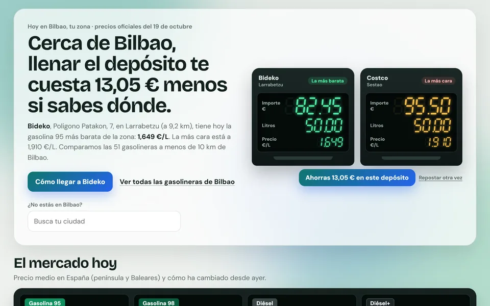
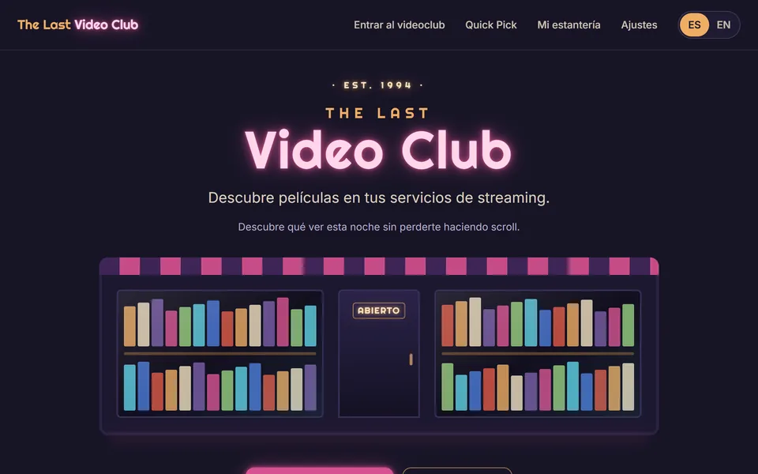
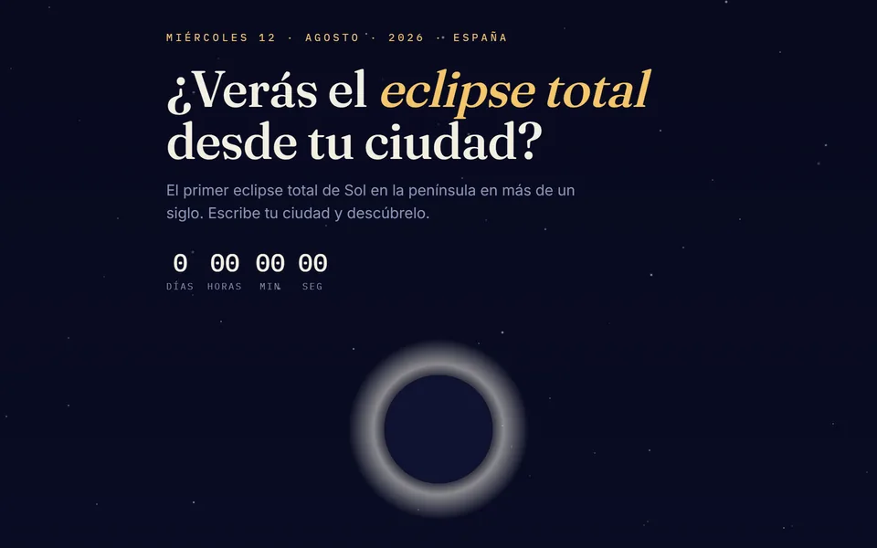

01GasolinaGo
Precios oficiales de gasolina y diésel en toda España: encuentra la gasolinera más barata cerca de ti, compárala con la media del mercado y abre la ruta para llegar.
Ver webDisponible para hablar de datos
Hola, soy
Data Analyst en Inetum
Graduado en ADE, con un Máster en Business Analytics por Mondragon Unibertsitatea. Convierto datos en decisiones y disfruto construyendo mis propios proyectos con vibe coding.
Proyectos
Proyectos personales, de la idea al despliegue, hechos con vibe coding.

01Precios oficiales de gasolina y diésel en toda España: encuentra la gasolinera más barata cerca de ti, compárala con la media del mercado y abre la ruta para llegar.
Ver web
02Pasea en primera persona por un videoclub de los 90 y decide qué ver esta noche entre las películas que de verdad están en tus plataformas (Netflix, Disney+, Prime Video, HBO Max). Bilingüe ES/EN.
Ver webRecomendador de películas y series: un test rápido para conocer tus gustos y, a partir de ahí, solo lo que puedes ver ya en Netflix, HBO Max, Disney+ o Prime Video.
Ver web
04¿Verás el eclipse total desde tu ciudad? Escribe dónde estás y te dice si verás la totalidad del 12 de agosto de 2026, a qué hora y durante cuánto tiempo.
Ver webQué hago
Mi día a día como Data Analyst, en cuatro pasos.
Exploro datos para entender qué está pasando.
Python · SQL · BigQuery
Transformo datos complejos en visualizaciones claras.
Power BI · Tableau · Looker Studio
Descubro patrones y oportunidades que generan valor.
GA4 · Firebase · Looker Studio
Ayudo a tomar decisiones basadas en datos, no en suposiciones.
Test A/B · Remote Config
Trayectoria
Sep 2025 — Actualidad Actual
Inetum · Bilbao
Ene 2024 — Oct 2025
Sandbox Group · Bilbao
Abr 2023 — Jul 2023
Remica · Bilbao
Ene 2023 — Abr 2023
Elkar-Lan, S. Coop · Bilbao
Mondragon Unibertsitatea
Facultad de CC. Económicas y Empresariales, UPV/EHU
Sep 2019 — Jun 2023
Université de Bordeaux
Sep 2021 — Ene 2022
Logro desbloqueado